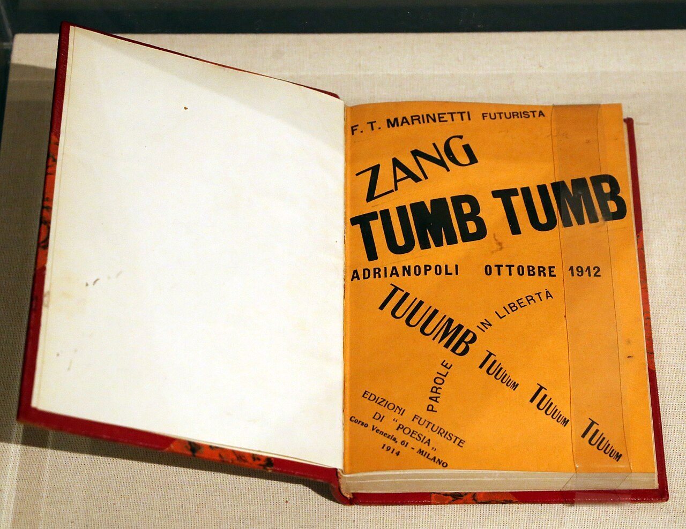

References / Book / 575
Zang Tumb Tumb
F. T. Marinetti’s first book of words in freedom, about the siege of Adrianople: on its orange cover the sound “TUUUMB” fans out in three directions like a shell burst.
- Source
- Wikimedia Commons: Filippo Tommaso Marinetti, Zang Tumb Tuum, 1914 (coll. priv.), photograph by Sailko
- Creator
- Filippo Tommaso Marinetti
- Made
- 1914
- Style
- Italian Futurism (agent-proposed, not yet reviewed by a person)
- Moods
- Loud, aggressive, fast
- Evidence
- Downloaded and inspected a photograph by the Commons user Sailko, 15 December 2019 (original 3978 × 3072 px; a 1280 × 988 px rendering was inspected and stored). It shows an open copy of the book in a display case; the file title says the copy is in a private collection, and the exhibition is not named. The copy has a later red binding with marbled boards, and a strip of tape or paper covers the right edge of the cover. Only the cover was seen; the inner pages were not inspected.
- Reviewed
- Rights
- Open license, stored. License: CC-BY-3.0. Rights policy
.jpg){kind=link}
Context
Zang Tumb Tumb was Marinetti’s first published collection of parole in libertà. Begun in 1912 and published in 1914, it recounts his experience of the siege of Adrianople in the First Balkan War, which he covered as a war correspondent. Wikipedia: Zang Tumb Tumb.
The cover names the publisher as Edizioni futuriste di “Poesia”, Corso Venezia 61, Milan, 1914.
Wikipedia says the Vorticist magazine BLAST was directly influenced by the book. Wikipedia: Futurism. The Museum of Modern Art holds a copy (MoMA 31450); its page refused scripted access.
Observed
- The cover is a saturated orange paper printed in black only.
- “F. T. MARINETTI FUTURISTA” is a small line of capitals at the top.
- “ZANG” is set in a condensed capital, tilted upward; “TUMB TUMB” below it is a very heavy, wide grotesque, horizontal and the largest type on the page.
- “ADRIANOPOLI OTTOBRE 1912” is a line of spaced bold capitals.
- From one point, three lines radiate: “TUUUMB” in large capitals up to the left, “PAROLE IN LIBERTÀ” up to the right in smaller capitals, and a run of “TUUUM” words stepping down to the right, each smaller than the one before.
- “PAROLE” runs vertically downward from the same point; the publisher’s imprint below is a small serif set on a slight curve.
Why it belongs
The cover is a compact lesson in the style: four or more type styles, words at several angles, one dominant word much larger than the rest, and a radiating composition that reads as an explosion.
The stepped, shrinking “TUUUM” words show sound fading with distance, a typographic version of motion by repetition.
Borrow
Radiate three lines of type from one point at different angles to suggest a burst.
Repeat a word and make each repetition smaller to show it fading away.
Print black on a single loud colored paper, such as orange.
Measured
Machine-extracted by tools/image-traits.py on . Full measurement.
- Mean chroma
- 0.3
- Palette
- #fcfbf6 17%
- #ea8c17 13%
- #d8c9ae 13%
- #c3b091 7%
- #f3f0e4 7%
- #1a231f 6%
- #e1d5bc 5%
- #f5981f 5%

